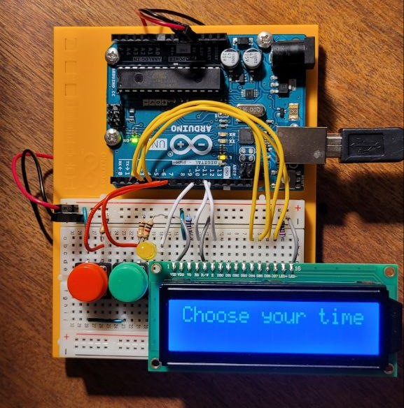
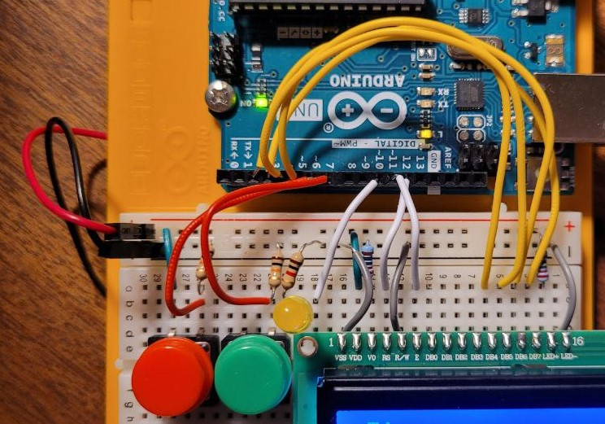
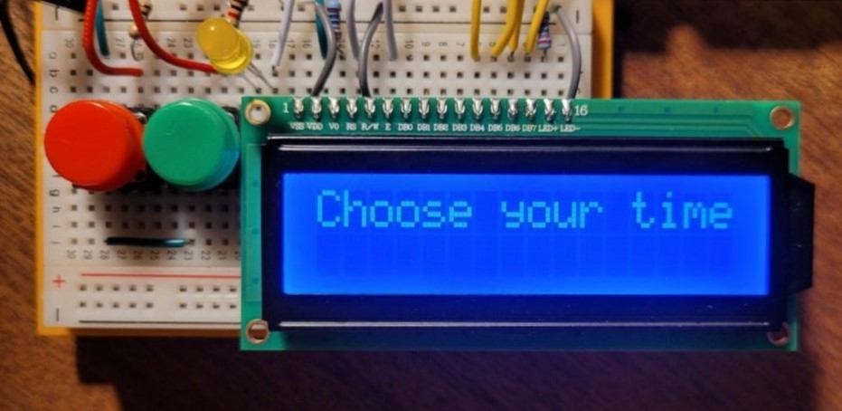
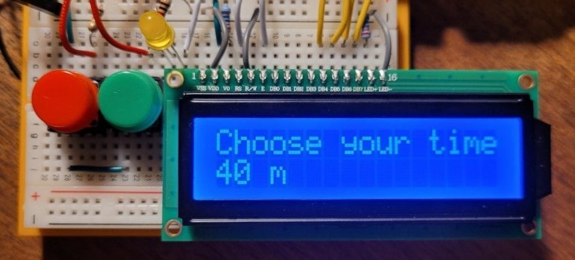
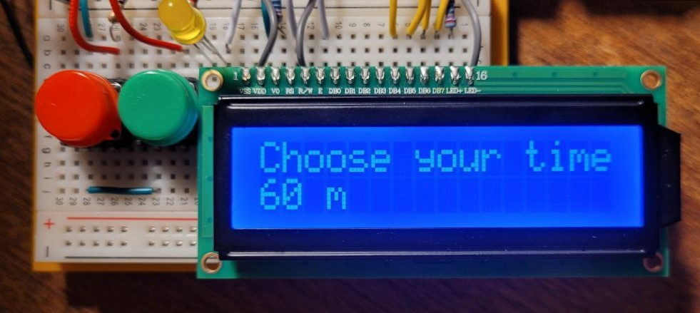
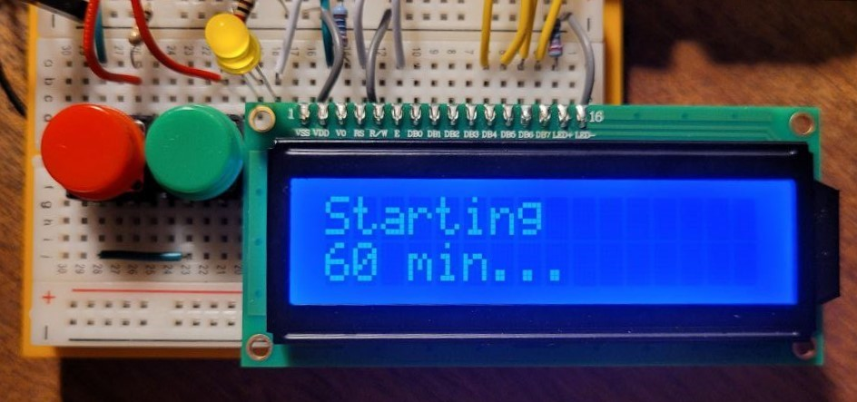

Oppgave 3
Elektronikk med Arduino Uno : Pomodoro
Benytter mikrokontrolleren Arduino Uno for å lære mer om elektronikk og å lage noe eget.
Hvorfor?
Ønsket å lage en pomodoro for å bli minnet på å ta pauser i jobbing og benytte en enhet som ikke er så distraherende til å nå dette formålet. Det skal være mulig å trykke på knapper for å velge ut en egnet arbeids- og pausetid. Deretter vil det foregå en nedtelling på skjermen. Lys skal vises fram til pausetid. Noe som hadde vært morsomt å få til var å sette på en sensor slik at man må gå bort til den for å skru den av ved å riste den eller liknende.
Utstyr
- Arduino Uno
- Breadboard
- LCD-skjerm [16x2]
- To taktile knapper
- 2 * 10kΩ-resistor
- 2 * 220Ω-resistor
- LED (gul)
Hvordan
Tok utgangspunkt i noe liknende fra Arduino-starter-kit, koblet sammen elementene og prøvde meg fram i Arduino IDE for å få noe som funket.
   Ressurser
Vis koden ↕
Gå til Github foreløpig ...
Klikk her å se .ino-filen på Github